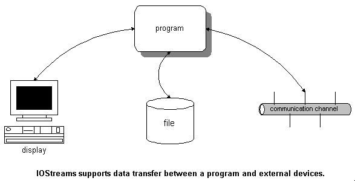
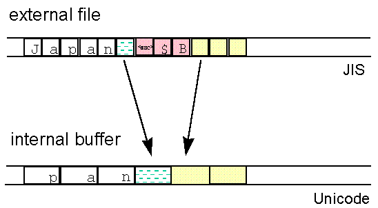
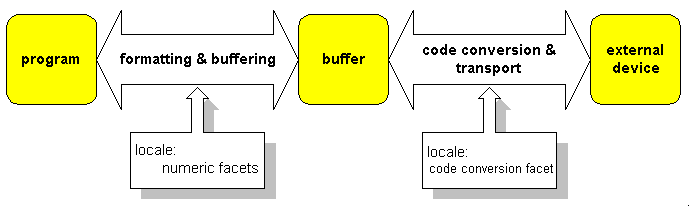

The main purpose of the standard iostreams is to serve as a tool for input and output of data. Generally, input and output are the transfer of data between a program and any kind of external device, as illustrated in Figure 17:

The internal representation of such data is meant to be convenient for data processing in a program. On the other hand, the external representation can vary quite a bit: it might be a display in human-readable form, or a portable data exchange format. The intent of a representation, such as conserving space for storage, can also influence the representation.
Text I/O involves the external representation of a sequence of characters; every other case involves binary I/O. Traditionally, iostreams are used for text processing. Such text processing through iostreams involves two processes: formatting and code conversion.
Formatting is the transformation from a byte sequence representing internal data into a human-readable character sequence; for example, from a floating point number, or an integer value held in a variable, into a sequence of digits. Figure 18 illustrates the formatting process:
Code conversion is the process of translating one character representation into another; for example, from wide characters held internally to a sequence of multibyte characters for external use. Wide characters are all the same size, and thus are convenient for internal data processing. Multibyte characters have different sizes and are stored more compactly. They are typically used for data transfer, or for storage on external devices such as files. Figure 19 illustrates the conversion process:

The iostreams facility has two layers: one that handles formatting, and another that handles code conversion and transport of characters to and from the external device. The layers communicate through a buffer, as illustrated in Figure 20:

In the next sections we'll look at the function of each layer in more detail.
In the formatting layer, the transformation between a program's internal data representation and a readable representation as a character sequence takes place. This formatting and parsing may involve, among other things:
Precision and notation of floating point numbers
Hexadecimal, octal, or decimal representation of integers
Skipping of white space in the input
Field width for output
Adapting of number formatting to local conventions
The transport layer is responsible for producing and consuming characters. It encapsulates knowledge about the properties of a specific external device. Among other things, this involves:
Block-wise output to files through system calls
Code conversion to multibyte encodings
To reduce the number of accesses to the external device, a buffer is used. For output, the formatting layer sends sequences of characters to the transport layer, which stores them in a stream buffer. The actual transport to the external device happens only when the buffer is full or explicitly flushed. For input, the transport layer reads from the external device and fills the buffer. The formatting layer receives characters from the buffer. When the buffer is empty, the transport layer is responsible for refilling it.
Both the formatting and the transport layers use the stream's locale. The formatting layer delegates the handling of numeric entities to the locale's numeric facets. The transport layer uses the locale's code conversion facet for character-wise transformation between the buffer content and characters transported to and from the external device. Figure 21 shows how locales are used with iostreams:

Iostreams support two kinds of I/O: file I/O and in-memory I/O.
File I/O involves the transfer of data to and from an external device. The device need not necessarily be a file in the usual sense of the word. It could just as well be a communication channel, or another construct that conforms to the file abstraction.
In contrast, in-memory I/O involves no external device. Thus code conversion and transport are not necessary; only formatting is performed. The result of such formatting is maintained in memory, and can be retrieved in the form of a character string.